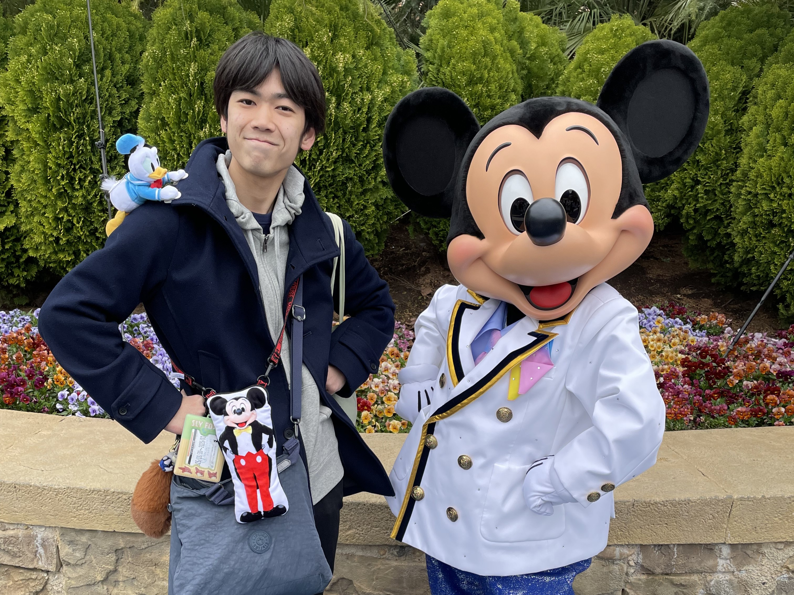

基礎情報
- H.N.
- Nicholas
- 出身地
- 神戸
- 所属
- 国立明石高専 電気情報工学科
職業
地下労働者
地下で外国人労働者と白い粉のかかった熱い物を運ぶ仕事をしています。
※サイゼリヤの地下店舗のことです。
好きな食べ物
蒸し鶏の香味ソース

鶏肉、わかめ、野菜ペースト。そしてそれをまとめ上げるガルムソース。
すべてが調和していて、最高の逸品です。
サイゼは鶏料理が全体的にうまいと思う。
好きな音楽
始まりの歌 / 緑黄色社会
前向きになれる曲です。朝出かける前や、勇気が欲しい時に聞いています。
雑食なのでほかのアーティストさんの曲もいろいろ聞いています。
趣味：ディズニー

特にショーやパレードを見たり、キャラクターと会うのが好きです。
推しはズートピアのニックや、ドナルド、プルートです。
趣味：ケモノ

ケモノキャラも好きです。個人的にはズートピアくらいの、ケモ度のキャラが好きです。
ちなみに、ケモノフレンズはケモノキャラとは認めていません。（嫌いではないです）